NLP Deep Learning
Maîtriser le traitement du langage naturel (NLP) avec les réseaux de neurones — convertir du texte en vecteurs via Tokenization, Embedding et Word2Vec, puis appliquer des RNN (LSTM) et des CNN 1D pour des tâches de classification de texte et d'analyse de sentiment.
- Cheatsheet — NLP Deep Learning
- ️ Récapitulatif — Erreurs clés à éviter
- 1) Rappels RNN — Structure des données séquentielles
- 2) Applications du NLP
- 3) Convertir des mots en nombres
- 4) Embedding — La solution
- 5) Custom Embedding avec `layers.Embedding`
- 6) Word2Vec — Embedding indépendant
- 7) CNN 1D pour le NLP
- 8) Attention et Transformers (aperçu)
- Bibliographie
- Challenges
📋 Cheatsheet — NLP Deep Learning
Tokenization et padding
from tensorflow.keras.preprocessing.text import Tokenizer
from tensorflow.keras.utils import pad_sequences
## Tokenizer : convertit les mots en entiers (dictionnaire)
tk = Tokenizer() # instancie le tokenizer
tk.fit_on_texts(X) # construit le vocabulaire à partir du corpus
X_token = tk.texts_to_sequences(X) # convertit chaque phrase en liste d'entiers
vocab_size = len(tk.word_index) # nombre de mots uniques dans le corpus
## Padding : toutes les séquences à la même longueur (pour le tenseur)
X_pad = pad_sequences(X_token, dtype='float32', padding='post') # complète avec des 0 à droite
## X_pad.shape = (n_sentences, max_sentence_length)Embedding layer (custom, appris avec le modèle)
from tensorflow.keras import Sequential, Input, layers
model = Sequential()
model.add(Input(shape=X_pad.shape[1:])) # shape = (max_sentence_length,)
model.add(layers.Embedding(
input_dim=vocab_size + 1, # +1 pour le token de padding (0)
output_dim=embedding_size, # dimension de l'espace d'embedding (ex: 100)
mask_zero=True # ignore les 0 du padding automatiquement
))
## Output shape : (batch_size, max_sentence_length, embedding_size)
## Nb de paramètres = (vocab_size + 1) × embedding_sizeWord2Vec (embedding indépendant, pré-entraîné ou custom)
from gensim.models import Word2Vec
## Entraîner Word2Vec sur son propre corpus
word2vec = Word2Vec(
sentences=X_train, # liste de listes de mots
vector_size=100, # dimension de l'embedding
window=5, # nb de mots voisins utilisés pour la prédiction
min_count=5 # ignore les mots vus < 5 fois
)
word2vec.wv['movie'] # vecteur de dimension 100 pour "movie"
word2vec.wv.most_similar('movie', topn=5) # 5 mots les plus proches sémantiquement
## Charger un embedding pré-entraîné (transfer learning)
import gensim.downloader
model_wiki = gensim.downloader.load('glove-wiki-gigaword-50') # GloVe 50D pré-entraîné
model_wiki.most_similar('movie', topn=5) # résultats bien meilleurs sur petit corpusModèle RNN pour NLP (classification de sentiment)
model = Sequential([
Input(shape=X_pad.shape[1:]),
layers.Embedding(input_dim=vocab_size+1, output_dim=30, mask_zero=True),
layers.LSTM(20), # couche récurrente
layers.Dense(1, activation="sigmoid") # classification binaire
])
model.compile(loss='binary_crossentropy', optimizer='rmsprop', metrics=['accuracy'])
model.fit(X_pad, y, epochs=5, batch_size=32)Modèle CNN 1D pour NLP (alternative au RNN)
model = Sequential([
Input(shape=X_pad.shape[1:]),
layers.Embedding(input_dim=vocab_size+1, output_dim=30, mask_zero=True),
layers.Conv1D(20, kernel_size=3), # convolution sur 3 mots adjacents
layers.Flatten(), # aplatit avant la couche Dense
layers.Dense(1, activation="sigmoid")
])
## Conv1D glisse le long de l'axe des mots (pas de l'embedding)
## kernel_size = nombre de mots adjacents analysés par le filtre⚠️ Récapitulatif — Erreurs clés à éviter
Utiliser les tokens bruts comme features d'un modèle
Les entiers assignés par le Tokenizer sont arbitraires — ils imposent un faux ordre entre les mots.
❌ model.fit(X_token, y) — le modèle traite "good"=1 < "bad"=32 comme une relation ordinale
✅ Toujours passer par un layers.Embedding ou Word2Vec pour représenter chaque mot comme un vecteur dense
Oublier de padder les séquences avant de les passer au modèle
Les phrases ont des longueurs différentes, mais le tenseur d'entrée doit être rectangulaire.
❌ model.fit(X_token, y) où X_token est une liste de listes de longueurs différentes → erreur
✅ X_pad = pad_sequences(X_token, padding='post') + mask_zero=True dans l'Embedding
Oublier le +1 dans input_dim de l'Embedding
Le padding utilise la valeur 0, qui doit aussi avoir un slot dans la matrice d'embedding.
❌ layers.Embedding(input_dim=vocab_size, ...) → IndexError ou embedding décalé
✅ layers.Embedding(input_dim=vocab_size + 1, ...) pour réserver l'index 0 au padding
Appliquer une Conv2D sur du texte embedé
L'ordre des dimensions de l'embedding est arbitraire — convoluer verticalement n'a pas de sens.
❌ layers.Conv2D(...) sur une matrice (mots × embedding_dim) → capture des patterns absurdes
✅ layers.Conv1D(...) glisse uniquement le long de l'axe des mots (horizontal)
Entraîner Word2Vec sur un corpus trop petit sans transfer learning
Un petit corpus produit des embeddings de mauvaise qualité — les mots rares n'ont pas assez de contexte.
❌ Word2Vec(sentences=X_train[:100], vector_size=100) — embeddings bruités et non fiables
✅ Charger un embedding pré-entraîné :
gensim.downloader.load('glove-wiki-gigaword-50')
1) Rappels RNN — Structure des données séquentielles
1.1 X et y dans un contexte RNN
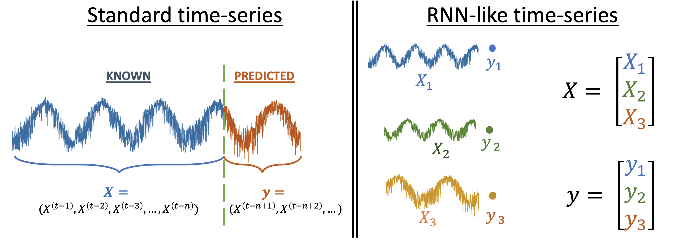
En Time Series et en NLP, X est une séquence d'observations (valeurs passées, mots successifs…) et y est ce qu'on veut prédire (valeur future, catégorie, sentiment…).
## Shape de X pour un RNN
## X.shape = (N_SEQUENCES, N_OBSERVATIONS, N_FEATURES)
## Ex NLP : (nb_phrases, max_longueur_phrase, embedding_dim)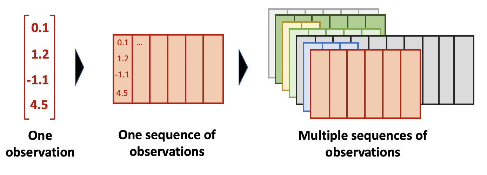
Le nombre d'observations peut varier d'une séquence à l'autre — c'est pour ça qu'on padde les séquences avant de les passer au modèle.
1.2 return_sequences=True
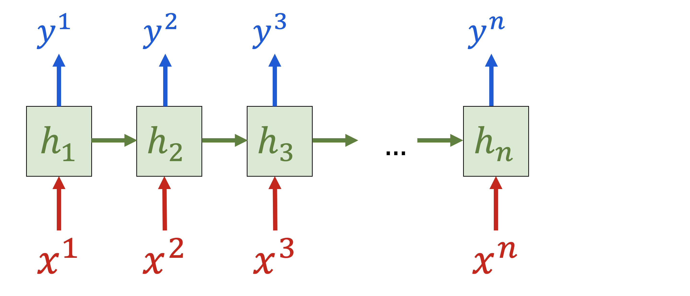
Par défaut, un LSTM ne retourne que la dernière sortie (un seul vecteur). Avec return_sequences=True, il retourne une sortie à chaque pas de temps — nécessaire pour empiler plusieurs couches RNN.
model.add(layers.LSTM(10, activation='tanh', return_sequences=True)) # output à chaque step
model.add(layers.LSTM(10, activation='tanh')) # dernière sortie seulement
model.add(layers.Dense(1))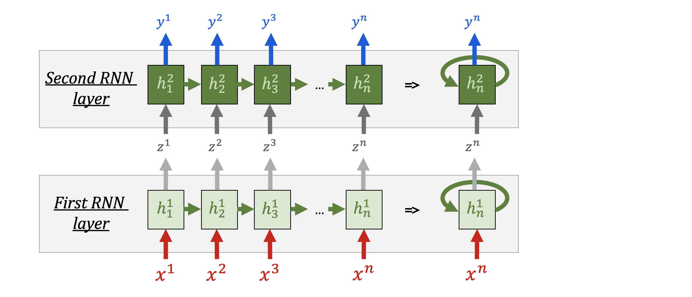
1.3 Padding
Les séquences de longueurs différentes doivent être complétées (paddées) pour former un tenseur rectangulaire.
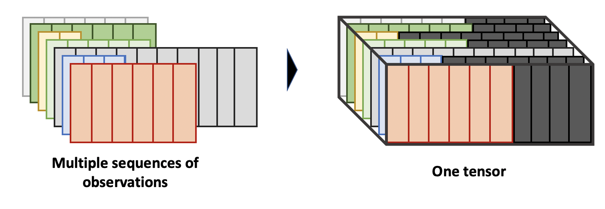
from tensorflow.keras.utils import pad_sequences
X_pad = pad_sequences(X, dtype='float32', padding='post', value=-1000) # padding à droite
model.add(layers.Masking(mask_value=-1000)) # ignore les valeurs paddées2) Applications du NLP
2.1 Modèle de langage (Language Model)
Prédire le mot suivant à partir des mots précédents — c'est ce qui alimente la prédiction de texte sur smartphone.
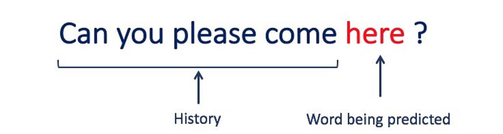
2.2 Classification de texte / Analyse de sentiment
Classer une phrase comme positive, négative, ou une émotion spécifique (joie, colère…).
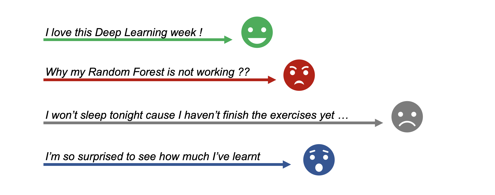
2.3 Sequence-to-Sequence (traduction)
Produire une séquence de sortie à partir d'une séquence d'entrée — ex : traduction automatique.
3) Convertir des mots en nombres
3.1 Le problème
Les RNN attendent des nombres en entrée, pas du texte. Il faut convertir chaque mot en une représentation numérique exploitable.
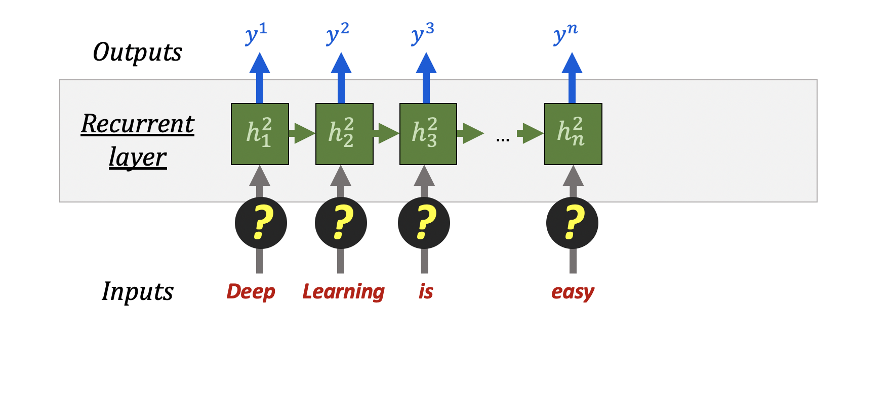
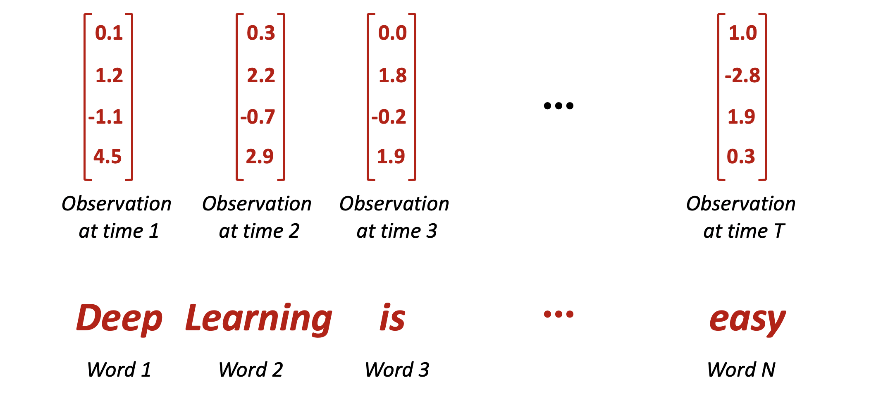
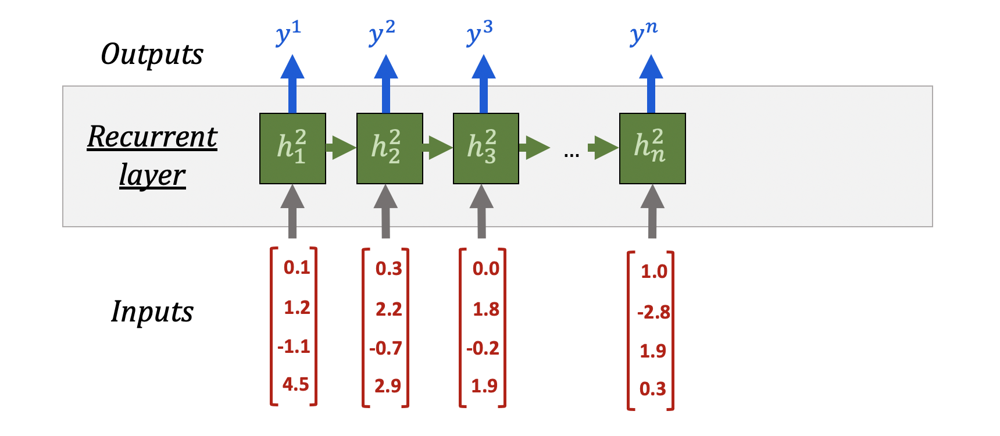
3.2 Tokenization — nécessaire mais insuffisante
La tokenization assigne un entier unique à chaque mot du vocabulaire.
## "this is good and this is bad" → [9, 8, 1, 109, 9, 8, 32]
## Dictionnaire : {"this": 9, "is": 8, "good": 1, ...}La tokenization seule n'est pas une bonne représentation : les entiers imposent un ordre arbitraire (good=1 < bad=32 ?) qui n'a aucun sens sémantique. Le OneHotEncoding n'est pas viable non plus — les vocabulaires sont trop grands (>10 000 mots).
4) Embedding — La solution
4.1 Principe
Chaque mot est représenté par un vecteur dense dans un espace de dimension choisie (30 à 300 typiquement). Les mots sémantiquement proches sont proches dans cet espace.
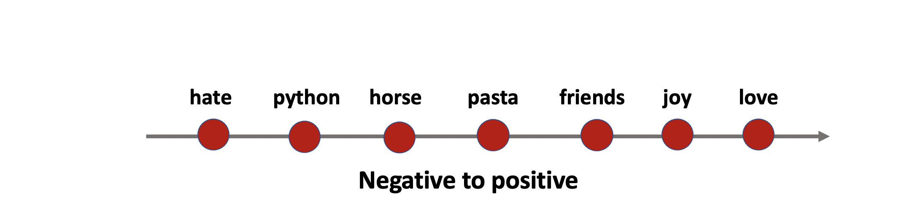
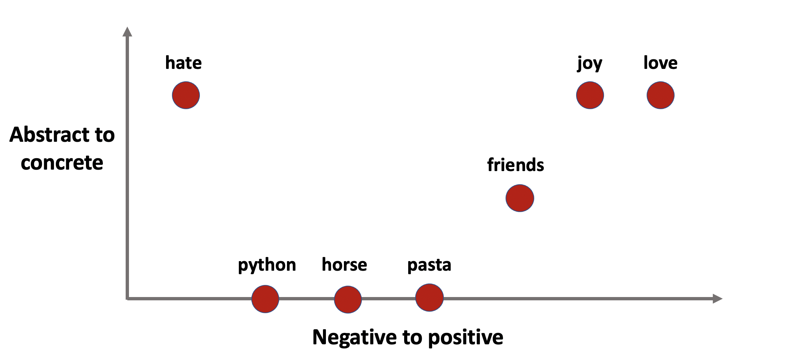
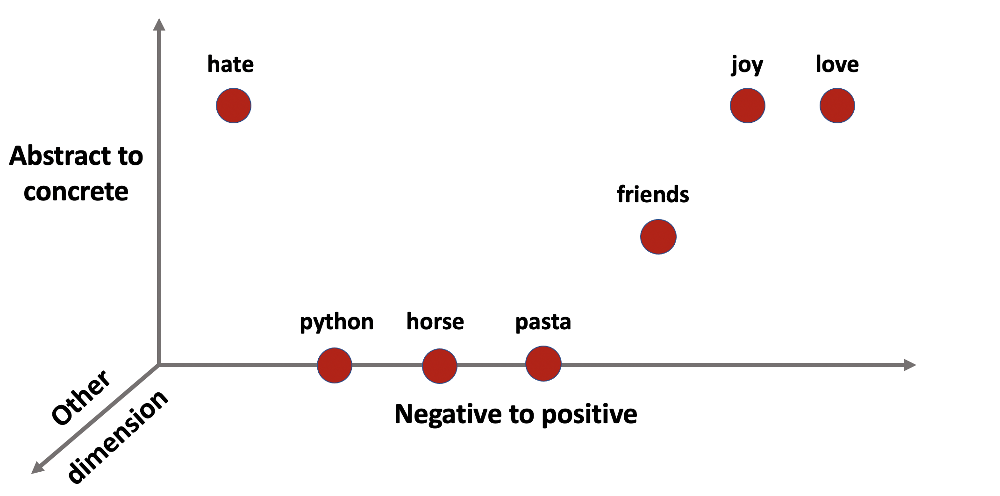
4.2 Propriétés d'un bon embedding

Les mots sémantiquement proches sont mathématiquement proches dans l'espace d'embedding. On peut même faire de l'arithmétique sur les mots :
$V(\text{Queen}) - V(\text{King}) + V(\text{Man}) \approx V(\text{Woman})$
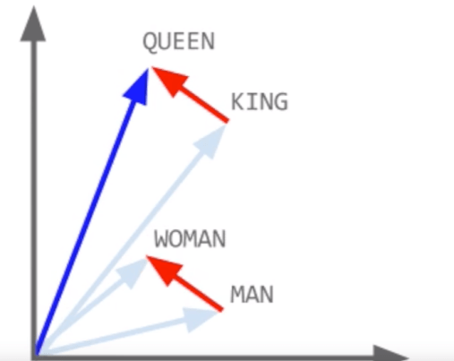
4.3 Deux approches pour obtenir un embedding
Custom Embedding (layers.Embedding) | Word2Vec / GloVe | |
|---|---|---|
| Principe | Appris conjointement avec le modèle (backprop) | Appris indépendamment sur un grand corpus |
| Avantage | Optimisé pour la tâche spécifique | Rapide, bon sur petit corpus (transfer learning) |
| Inconvénient | Plus de paramètres → plus lent à entraîner | Pas optimisé pour la tâche |
| Quand l'utiliser | Grand corpus d'entraînement disponible | Petit corpus ou besoin de rapidité |
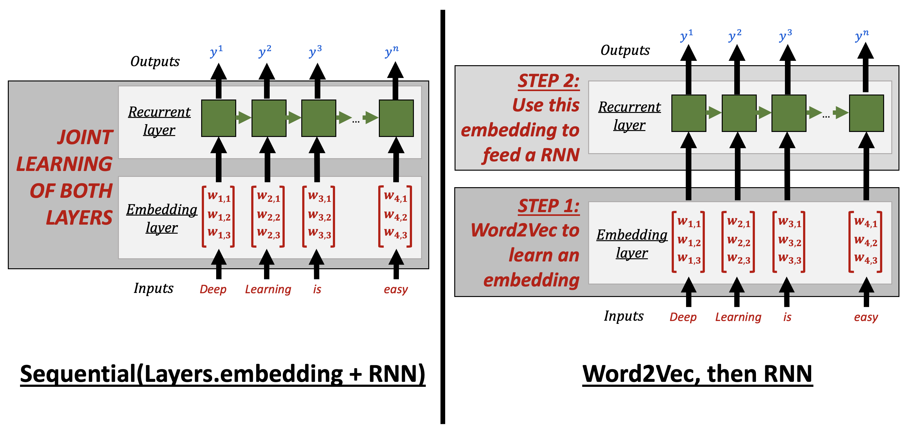
5) Custom Embedding avec layers.Embedding
5.1 Principe
L'embedding est une couche du réseau de neurones qui apprend la meilleure représentation vectorielle de chaque mot pour la tâche donnée.
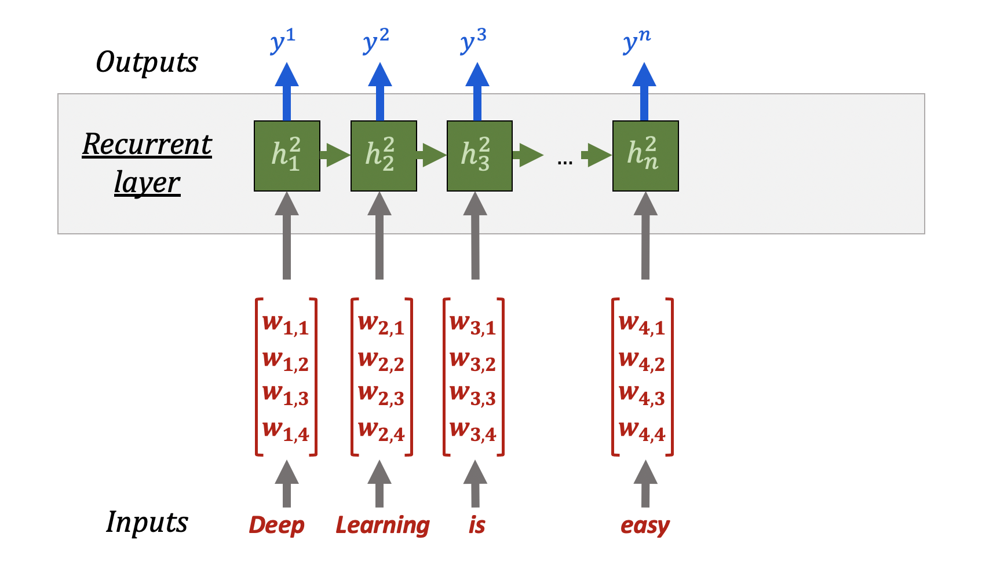
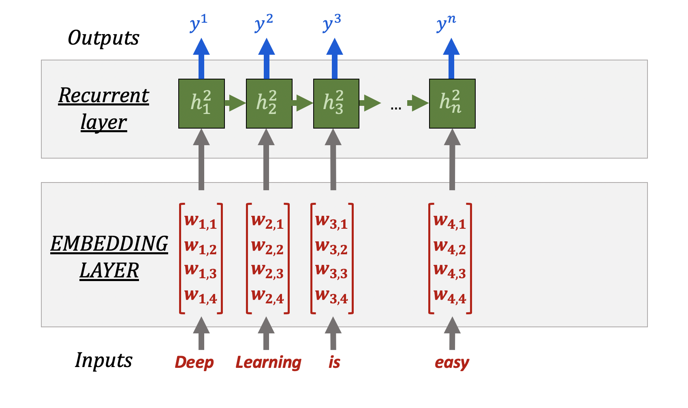
Le token (entier) sert d'index dans la matrice d'embedding — le réseau apprend les poids de cette matrice par backpropagation.
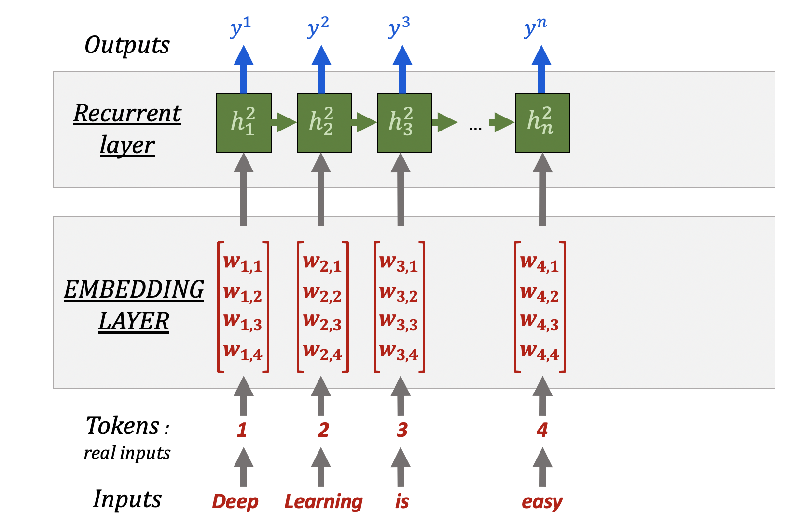
5.2 Shape du tenseur d'entrée
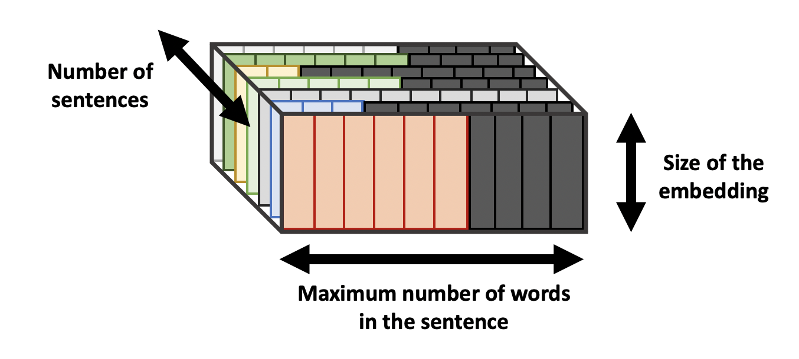
## X.shape = (n_sentences, max_sentence_length, embedding_dim)5.3 Pipeline complet : Tokenize → Pad → Embed → LSTM → Dense
import numpy as np
from tensorflow.keras.preprocessing.text import Tokenizer
from tensorflow.keras.utils import pad_sequences
from tensorflow.keras import Sequential, Input, layers
## --- Données mock ---
X = ['Deep learning is super easy',
'Deep learning was super bad and too long',
'This is the best lecture of the camp!']
y = np.array([1., 0., 0.])
## --- Étape 1 : Tokenizer ---
tk = Tokenizer()
tk.fit_on_texts(X) # construit le dictionnaire
vocab_size = len(tk.word_index) # 16 mots uniques
X_token = tk.texts_to_sequences(X) # chaque phrase → liste d'entiers
## --- Étape 2 : Padding ---
X_pad = pad_sequences(X_token, dtype='float32', padding='post')
## X_pad.shape = (3, 8) — 3 phrases, max 8 mots
## --- Étape 3 : Modèle ---
embedding_size = 100
model = Sequential()
model.add(Input(shape=X_pad.shape[1:]))
model.add(layers.Embedding(
input_dim=vocab_size + 1, # 16 + 1 pour le padding (index 0)
output_dim=embedding_size, # vecteur de dim 100 par mot
mask_zero=True # ignore le padding
))
model.add(layers.LSTM(20))
model.add(layers.Dense(1, activation="sigmoid"))
model.compile(loss='binary_crossentropy', optimizer='rmsprop', metrics=['accuracy'])
model.fit(X_pad, y, epochs=5, batch_size=16, verbose=0)Nombre de paramètres de l'Embedding = (vocab_size + 1) × embedding_size. Avec 10 000 mots en 100 dimensions → 1M de paramètres rien que pour l'embedding.
5.4 Optimiser la vitesse d'entraînement
Pour accélérer le prototypage :
- Réduire embedding_size (30 au lieu de 100)
- Réduire le nombre de phrases d'entraînement
- Limiter max_sentence_length dans pad_sequences(X_token, maxlen=100) — les phrases très longues ajoutent beaucoup de zéros inutiles
- Augmenter le batch_size (64, 128) pendant le prototypage
6) Word2Vec — Embedding indépendant
6.1 Principe
Word2Vec apprend un embedding indépendamment de la tâche finale : il prédit un mot à partir de ses voisins (ou inversement). Le résultat est une représentation vectorielle de qualité pour chaque mot.
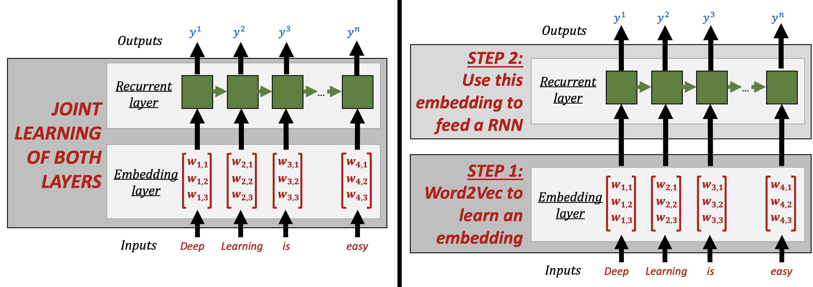
6.2 Fonctionnement interne
Word2Vec découpe le corpus en fenêtres de mots adjacents et entraîne un auto-encodeur à prédire le mot central à partir de ses voisins.
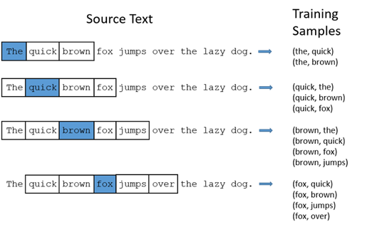
L'espace latent (couche cachée) de ce réseau constitue l'embedding.
👉 Vidéo explicative Word2Vec — 8 min
6.3 Implémentation avec Gensim
from gensim.models import Word2Vec
from tensorflow.keras.preprocessing.text import text_to_word_sequence
## Convertir les phrases en listes de mots
X_train_words = [text_to_word_sequence(s) for s in train_sentences]
## Entraîner Word2Vec sur le corpus
word2vec = Word2Vec(
sentences=X_train_words,
vector_size=100, # dimension de l'embedding
window=5, # fenêtre de contexte
min_count=5 # ignore les mots rares (< 5 occurrences)
)
## Accéder au vecteur d'un mot
word2vec.wv['movie'] # array de dim 100
## Mots les plus proches
word2vec.wv.most_similar('movie', topn=5) # [('film', 0.96), ('sequel', 0.94), ...]6.4 Hyperparamètres Word2Vec
| Paramètre | Rôle | Valeur typique |
|---|---|---|
vector_size | Dimension de l'embedding | 50–300 |
window | Nb de mots voisins utilisés | 2–10 |
min_count | Ignore les mots vus < N fois | 1–10 |
6.5 Transfer Learning — Embeddings pré-entraînés
import gensim.downloader
## Liste des modèles disponibles
print(list(gensim.downloader.info()['models'].keys()))
## Charger GloVe pré-entraîné sur Wikipedia (50 dimensions)
model_wiki = gensim.downloader.load('glove-wiki-gigaword-50')
model_wiki.most_similar('movie', topn=5) # résultats de meilleure qualitéSur un petit corpus, les embeddings pré-entraînés (GloVe, Word2Vec Google News) donnent de bien meilleurs résultats que l'entraînement from scratch.
6.6 Arithmétique sur les mots
v_queen = word2vec.wv['queen']
v_king = word2vec.wv['king']
v_man = word2vec.wv['man']
v_result = v_queen - v_king + v_man # ≈ V(woman)
word2vec.wv.similar_by_vector(v_result) # → [('woman', 0.89), ('girl', 0.87), ...]7) CNN 1D pour le NLP
7.1 Pourquoi pas Conv2D ?
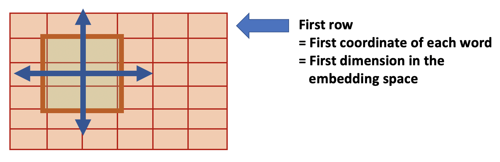
Chaque ligne de la matrice (mots × embedding_dim) correspond à une coordonnée arbitraire de l'embedding. Convoluer verticalement n'a aucun sens — il ne faut jamais regarder "la moitié d'un embedding".
7.2 Conv1D — Convolution le long des mots
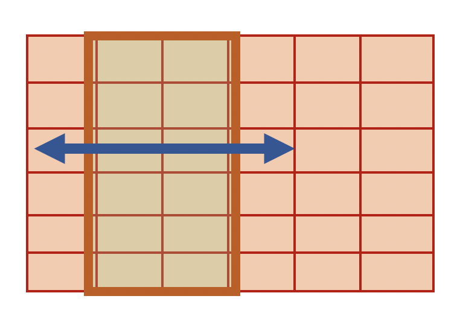
layers.Conv1D glisse le filtre uniquement le long de l'axe des mots, mot par mot. Le kernel_size détermine combien de mots adjacents sont analysés ensemble.
7.3 Comparaison RNN vs CNN pour le NLP
## --- RNN (LSTM) ---
rnn = Sequential([
Input(shape=X_pad.shape[1:]),
layers.Embedding(input_dim=5000, output_dim=30, mask_zero=True),
layers.LSTM(20), # mémoire séquentielle
layers.Dense(1, activation="sigmoid")
])
## --- CNN 1D ---
cnn = Sequential([
Input(shape=X_pad.shape[1:]),
layers.Embedding(input_dim=5000, output_dim=30, mask_zero=True),
layers.Conv1D(20, kernel_size=3), # patterns locaux de 3 mots
layers.Flatten(),
layers.Dense(1, activation="sigmoid")
])| RNN (LSTM) | CNN 1D | |
|---|---|---|
| Capture | Dépendances longue distance | Patterns locaux (n-grams) |
| Vitesse | Plus lent (séquentiel) | Plus rapide (parallélisable) |
| Usage NLP | Traduction, génération | Classification de texte, sentiment |
L'embedding est indépendant de la couche suivante — on peut utiliser layers.Embedding ou Word2Vec avec un RNN ou un CNN.
8) Attention et Transformers (aperçu)
8.1 Mécanisme d'attention
L'attention permet au modèle de pondérer l'importance de chaque mot de la séquence d'entrée lors de la prédiction — au lieu de compresser toute l'information dans un seul vecteur caché.
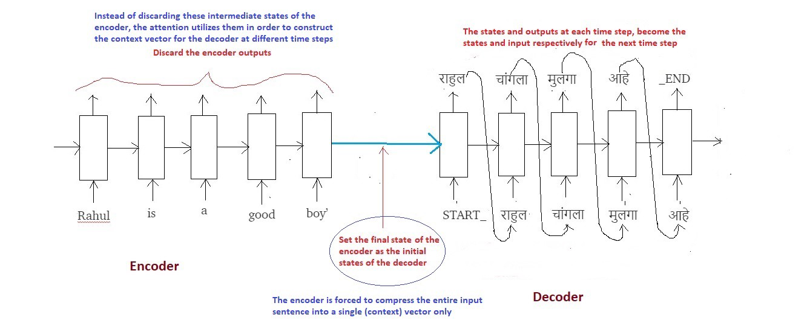
👉 Blog — Intuitive Understanding of Attention
8.2 Transformers — "Attention is All You Need"
Les Transformers remplacent entièrement les RNN par des mécanismes d'auto-attention (self-attention), permettant de traiter tous les mots en parallèle. Ils sont à la base de GPT, BERT, et de tous les LLM modernes.
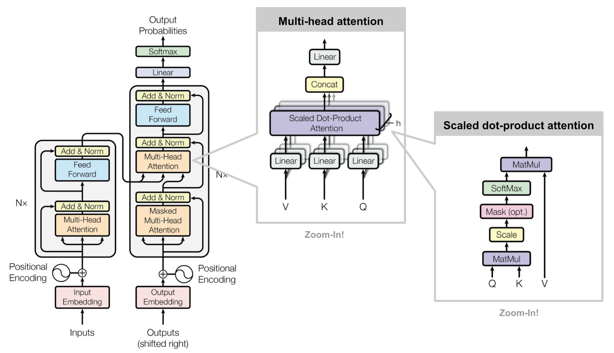
📚 Bibliographie
- 👉 CS224N: NLP with Deep Learning — Stanford
- 👉 92 vidéos NLP — Hugo Larochelle
- 👉 Word2Vec expliqué — vidéo 8 min
- 👉 Gensim Word2Vec documentation
- 👉 TensorFlow Embedding layer
- 👉 TensorFlow Tokenizer
🚀 Challenges
- Implémenter un pipeline NLP complet : tokenization → padding → embedding → LSTM → classification de sentiment sur le dataset IMDB
- Comparer les performances entre
layers.Embeddingcustom et Word2Vec pré-entraîné - Tester un CNN 1D comme alternative au LSTM pour la classification de texte
- 🧭 Introduction
- 1) Rappels — Les données séquentielles
- 2) Applications du NLP
- 3) Convertir les mots en nombres : la tokenization
- 4) L'embedding : représenter les mots comme des points dans l'espace
- 5) Custom Embedding avec `layers.Embedding`
- 6) Word2Vec — L'embedding indépendant
- 7) CNN 1D — Une alternative rapide au LSTM
- 8) Aperçu : Attention et Transformers
- Erreurs classiques à éviter
- 🎯 Questions de vérification
- 📌 TL;DR
🧭 Introduction
Le NLP (Natural Language Processing, ou traitement du langage naturel) est la branche du deep learning qui permet à un réseau de neurones de comprendre et de classer du texte. Concrètement : analyser si un avis est positif ou négatif, traduire une phrase, ou prédire le mot suivant dans une saisie de clavier.
Le problème fondamental : les réseaux de neurones ne comprennent que des nombres. Une phrase comme "ce film est nul" doit être transformée en vecteurs numériques avant de pouvoir entrer dans un modèle.
Ce cours couvre la chaîne complète pour y arriver :
- Tokenization : convertir chaque mot en un identifiant entier
- Embedding : transformer cet identifiant en un vecteur dense et significatif
- Word2Vec : une méthode alternative pour obtenir des embeddings de qualité
- LSTM : un réseau récurrent qui lit une séquence mot par mot
- CNN 1D : une alternative plus rapide pour analyser des patterns locaux dans le texte
5 choses à retenir absolument :
- Un token brut (entier) n'est PAS une bonne entrée pour un réseau — il faut passer par un embedding.
- Un embedding représente chaque mot comme un point dans un espace multidimensionnel. Les mots proches sémantiquement sont proches dans cet espace.
- Les phrases ont des longueurs différentes : il faut les aligner (padding) pour former un tableau rectangulaire.
- Word2Vec permet d'utiliser des représentations pré-entraînées sur des milliards de mots (transfer learning).
- Pour du texte, on utilise
Conv1Det nonConv2D.
Analogie fil rouge — le dictionnaire visuel :
Imaginez un immense plan en 2D (ou en 100 dimensions) où chaque mot du dictionnaire est placé comme un point. Les mots qui se ressemblent sémantiquement sont placés proches les uns des autres : "chat" et "chien" sont voisins, "roi" et "reine" sont proches, "voiture" est loin des deux. C'est exactement ce qu'est un espace d'embedding. Toutes les opérations du NLP deep learning construisent ou exploitent cet espace.
Mini-plan du cours :
- Rappels sur les séquences et les RNN
- Les applications du NLP
- Convertir les mots en nombres : la tokenization
- L'embedding : la vraie solution
- Embedding custom avec
layers.Embedding - Word2Vec : embedding indépendant
- CNN 1D : une alternative au LSTM
- Aperçu : Attention et Transformers
1) Rappels — Les données séquentielles
1.1 La structure de X et y pour un RNN
En NLP comme en séries temporelles, X est une séquence et y est ce qu'on veut prédire.
- Pour la classification de sentiment :
X= une phrase (suite de mots),y= positif ou négatif. - Pour la traduction :
X= une phrase en anglais,y= la traduction en français.
Le tenseur X a toujours la forme suivante quand on travaille avec des séquences :
# Shape de X pour un réseau récurrent
# X.shape = (N_SEQUENCES, N_OBSERVATIONS, N_FEATURES)
#
# En NLP concrètement :
# N_SEQUENCES = nombre de phrases dans le dataset
# N_OBSERVATIONS = longueur maximale d'une phrase (en mots)
# N_FEATURES = dimension de l'embedding (ex: 100)Exemple concret : si on a 1000 avis de films, chaque avis fait au plus 50 mots, et chaque mot est représenté par un vecteur de 100 dimensions, alors X.shape = (1000, 50, 100).
1.2 Le padding : mettre toutes les phrases à la même taille
Le problème : "Bon film" a 2 mots, "Un chef-d'œuvre absolument sublime" a 4 mots. Un tableau numpy doit être rectangulaire — toutes les lignes doivent avoir la même longueur.
La solution : le padding. On complète les phrases courtes avec des zéros jusqu'à atteindre la longueur de la plus longue.
from tensorflow.keras.utils import pad_sequences
# X_token est une liste de listes d'entiers (longueurs différentes)
# Exemple : [[9, 1], [3, 8, 12, 5], [7, 2, 4]]
X_pad = pad_sequences(
X_token,
dtype='float32',
padding='post' # complète avec des 0 à DROITE de chaque séquence
)
# Résultat : tableau rectangulaire, ex shape (3, 4)
# [[9, 1, 0, 0],
# [3, 8, 12, 5],
# [7, 2, 4, 0]]Le paramètre mask_zero=True dans la couche Embedding indique au modèle d'ignorer ces 0 de remplissage lors du calcul. Sans ça, le réseau essaierait d'interpréter les 0 comme de vrais mots.
1.3 return_sequences=True dans un LSTM
Par défaut, un LSTM lit toute la séquence et ne retourne qu'un seul vecteur à la fin (le résumé de la phrase entière). C'est souvent ce qu'on veut pour la classification.
Mais si on veut empiler plusieurs couches LSTM, chaque couche doit recevoir une séquence complète en entrée, pas juste un vecteur final. On utilise alors return_sequences=True.
from tensorflow.keras import Sequential, layers
model = Sequential()
# Premier LSTM : retourne une sortie à CHAQUE mot
model.add(layers.LSTM(32, return_sequences=True)) # output shape: (batch, temps, 32)
# Deuxième LSTM : retourne seulement la sortie finale
model.add(layers.LSTM(16)) # output shape: (batch, 16)
model.add(layers.Dense(1, activation='sigmoid'))Règle simple : seule la DERNIÈRE couche LSTM (avant la couche Dense) n'a PAS return_sequences=True. Toutes les couches LSTM intermédiaires doivent l'avoir.
2) Applications du NLP
Voici les trois grandes familles de tâches NLP qu'on peut résoudre avec du deep learning :
Modèle de langage : prédire le mot suivant. C'est ce qui permet la complétion automatique sur votre téléphone. Si vous tapez "Je vais au…", le modèle prédit "supermarché", "travail", "restaurant"…
Classification de texte / Analyse de sentiment : décider dans quelle catégorie tombe un texte. Exemple : un avis client est-il positif ou négatif ? Un email est-il un spam ? Quel est le sujet d'un article de presse ?
Séquence-à-séquence (traduction) : transformer une séquence de mots en une autre séquence. La traduction automatique (Google Translate), le résumé automatique, ou les chatbots fonctionnent ainsi.
3) Convertir les mots en nombres : la tokenization
3.1 Le principe de base
La tokenization assigne un entier unique à chaque mot du vocabulaire. C'est comme numéroter les entrées d'un dictionnaire.
from tensorflow.keras.preprocessing.text import Tokenizer
phrases = ['ce film est super',
'ce film est nul',
'super nul']
tk = Tokenizer()
tk.fit_on_texts(phrases) # construit le dictionnaire à partir des phrases
# Le dictionnaire créé ressemble à :
# {'ce': 1, 'film': 2, 'est': 3, 'super': 4, 'nul': 5}
print(tk.word_index)
X_token = tk.texts_to_sequences(phrases)
# Résultat : [[1, 2, 3, 4], [1, 2, 3, 5], [4, 5]]
vocab_size = len(tk.word_index) # 5 mots uniques dans ce petit corpus3.2 Pourquoi les tokens bruts sont insuffisants
Les entiers attribués par le Tokenizer sont arbitraires. Le mot "super" a reçu l'index 4 et "nul" l'index 5 — mais cela ne veut PAS dire que "nul" est "plus" que "super". Pourtant, si on donne ces entiers directement à un réseau de neurones, il va traiter 5 > 4 comme une relation ordinale réelle. C'est une erreur fondamentale.
Le One-Hot Encoding (encoder chaque mot comme un vecteur de zéros avec un seul 1) serait mathématiquement correct mais impraticable : avec un vocabulaire de 50 000 mots, chaque mot deviendrait un vecteur de 50 000 dimensions, dont 49 999 sont des zéros. Trop grand, trop vide, trop lent.
La solution : les embeddings.
4) L'embedding : représenter les mots comme des points dans l'espace
4.1 Le principe
Un embedding transforme chaque mot en un vecteur dense de dimension fixe (typiquement entre 30 et 300). On choisit cette dimension, appelée embedding_size ou output_dim.
Dans notre "dictionnaire visuel" :
- "chat" et "chien" ont des vecteurs proches (animaux domestiques)
- "chat" et "voiture" ont des vecteurs éloignés (catégories différentes)
- "roi" et "reine" sont proches, et leur différence ressemble à la différence entre "homme" et "femme"
4.2 La magie de l'arithmétique des mots
Un bon embedding permet même de faire des calculs sur les mots. Le résultat le plus célèbre :
En clair : si on prend le vecteur de "roi", qu'on soustrait le vecteur de "homme" et qu'on ajoute le vecteur de "femme", on obtient un vecteur très proche de celui de "reine". Le modèle a appris la notion de genre royal sans qu'on le lui ait jamais enseigné explicitement.
Exemple numérique simplifié (en 2D) :
| Mot | Dimension 1 (animalité) | Dimension 2 (taille) |
|---|---|---|
| chat | 0.9 | 0.2 |
| chien | 0.85 | 0.5 |
| voiture | 0.01 | 0.7 |
| fourmi | 0.9 | 0.01 |
"chat" et "chien" sont proches en dimension 1 (tous les deux des animaux). "voiture" est loin. "fourmi" et "chat" partagent le fait d'être des animaux mais diffèrent sur la taille.
4.3 Deux façons d'obtenir un embedding
Option 1 — Custom Embedding (layers.Embedding) : l'embedding est une couche du réseau et ses poids sont appris par backpropagation, en même temps que le reste du modèle. Idéal quand on a un grand dataset.
Option 2 — Word2Vec / GloVe : l'embedding est entraîné séparément sur un très grand corpus (Wikipedia, Google News…), puis réutilisé tel quel dans notre modèle (transfer learning). Idéal quand notre dataset est petit.
| Custom Embedding | Word2Vec / GloVe | |
|---|---|---|
| Apprentissage | Conjoint avec le modèle (backprop) | Indépendant, sur grand corpus |
| Avantage | Optimisé pour notre tâche | Excellent même sur petit dataset |
| Inconvénient | Beaucoup de paramètres | Pas spécifique à notre tâche |
| Utiliser quand | Grand corpus disponible | Petit dataset ou besoin de rapidité |
5) Custom Embedding avec layers.Embedding
5.1 Comment fonctionne la couche Embedding
La couche Embedding est essentiellement une grande table de correspondance (une matrice). Chaque ligne correspond à un mot (identifié par son index entier), et contient le vecteur de dimension embedding_size qui représente ce mot.
- Nombre de lignes :
vocab_size + 1(le +1 réserve l'index 0 pour le padding) - Nombre de colonnes :
embedding_size(à choisir, ex : 100) - Nombre total de paramètres appris :
(vocab_size + 1) × embedding_size
Avec 10 000 mots et un embedding de dimension 100, la couche Embedding contient à elle seule 1 000 100 paramètres. C'est souvent la couche la plus lourde du modèle !
Quand on donne l'entier 4 (le token de "super") à la couche Embedding, elle retourne simplement la 4ème ligne de sa matrice. Pendant l'entraînement, les poids de cette matrice se mettent à jour pour que les représentations vectorielles soient utiles à la tâche finale.
5.2 Pipeline complet : de la phrase brute à la prédiction
Voici le pipeline complet, étape par étape, avec un exemple de classification de sentiment :
import numpy as np
from tensorflow.keras.preprocessing.text import Tokenizer
from tensorflow.keras.utils import pad_sequences
from tensorflow.keras import Sequential, Input, layers
# --- Données d'exemple ---
X = ['Deep learning is super easy',
'Deep learning was super bad and too long',
'This is the best lecture of the camp!']
y = np.array([1., 0., 0.]) # 1 = positif, 0 = négatif
# =============================================
# ÉTAPE 1 : Tokenization
# Chaque mot unique reçoit un entier distinct
# =============================================
tk = Tokenizer()
tk.fit_on_texts(X) # construit le dictionnaire (vocabulaire)
vocab_size = len(tk.word_index) # nombre de mots uniques, ici 16
X_token = tk.texts_to_sequences(X)
# X_token = [[1, 2, 3, 4, 5],
# [1, 2, 6, 4, 7, 8, 9, 10],
# [11, 3, 12, 13, 14, 15, 12, 16]]
# =============================================
# ÉTAPE 2 : Padding
# Toutes les séquences à la même longueur
# (complète avec des 0 à droite)
# =============================================
X_pad = pad_sequences(X_token, dtype='float32', padding='post')
# X_pad.shape = (3, 8) — 3 phrases, longueur max = 8 mots
# =============================================
# ÉTAPE 3 : Construction du modèle
# =============================================
embedding_size = 100 # chaque mot sera représenté par 100 nombres
model = Sequential()
# Entrée : séquences de tokens paddés
model.add(Input(shape=X_pad.shape[1:])) # shape = (8,) — longueur max de phrase
# Couche Embedding : convertit chaque token en vecteur dense
model.add(layers.Embedding(
input_dim=vocab_size + 1, # +1 obligatoire pour réserver l'index 0 au padding
output_dim=embedding_size, # dimension du vecteur de sortie par mot
mask_zero=True # ignore les 0 de padding dans les calculs suivants
))
# Après Embedding : shape = (batch_size, 8, 100)
# Chaque mot est maintenant un vecteur de 100 valeurs
# Couche LSTM : lit la séquence de vecteurs mot par mot
model.add(layers.LSTM(20))
# Après LSTM : shape = (batch_size, 20)
# Toute la phrase est résumée en un vecteur de 20 valeurs
# Couche de sortie : classification binaire (positif/négatif)
model.add(layers.Dense(1, activation='sigmoid'))
# =============================================
# ÉTAPE 4 : Compilation et entraînement
# =============================================
model.compile(
loss='binary_crossentropy', # pour classification binaire
optimizer='rmsprop',
metrics=['accuracy']
)
model.fit(X_pad, y, epochs=5, batch_size=16, verbose=0)Récapitulatif du pipeline :
Tokenizer.fit_on_texts(X)→ crée le dictionnaire mot → entiertexts_to_sequences(X)→ transforme chaque phrase en liste d'entierspad_sequences(...)→ aligne les longueurs avec des zéroslayers.Embedding(vocab_size+1, embedding_size)→ table de vecteurs apprislayers.LSTM(n)→ lecture séquentielle, résumé finallayers.Dense(1, activation='sigmoid')→ prédiction
Toujours mettre vocab_size + 1 (et non vocab_size) dans input_dim de l'Embedding. Le Tokenizer ne génère jamais l'index 0 — il est réservé au padding. Si on oublie le +1, on obtient une erreur d'index ou un embedding décalé.
5.3 Astuce : accélérer le prototypage
Quand on teste rapidement un modèle, plusieurs réglages réduisent le temps d'entraînement sans changer l'architecture :
# Réduire la dimension de l'embedding
embedding_size = 30 # au lieu de 100, beaucoup plus rapide
# Limiter la longueur des phrases (coupe les phrases très longues)
X_pad = pad_sequences(X_token, maxlen=100, padding='post')
# Les phrases > 100 mots seront tronquées
# Augmenter le batch_size pendant le dev
model.fit(X_pad, y, epochs=5, batch_size=128)6) Word2Vec — L'embedding indépendant
6.1 L'idée derrière Word2Vec
Word2Vec est un algorithme qui apprend des embeddings de mots sans avoir de tâche supervisée (pas d'étiquette positif/négatif). Il apprend à partir d'un seul principe : les mots qui apparaissent dans des contextes similaires ont des significations similaires.
Concrètement, Word2Vec découpe le corpus en fenêtres glissantes et entraîne un petit réseau de neurones à prédire : "quel mot central se trouve entouré de ces mots voisins ?" L'espace latent de ce réseau (la couche cachée) constitue l'embedding.
Exemple avec une fenêtre de taille 2 :
"le chat mange la souris"
Pour le mot central "mange", les mots de contexte sont : "le", "chat", "la", "souris". Le réseau apprend que "mange" est un verbe d'action qui apparaît entre des animaux et des proies. Au fil de millions d'exemples, les vecteurs encodent ces relations.
6.2 Implémenter Word2Vec avec Gensim
from gensim.models import Word2Vec
from tensorflow.keras.preprocessing.text import text_to_word_sequence
# Les phrases doivent être des listes de mots (pas des chaînes de caractères)
# text_to_word_sequence gère la ponctuation, la casse, etc.
train_sentences = ["the movie was great", "i loved this film", "terrible acting"]
X_train_words = [text_to_word_sequence(s) for s in train_sentences]
# [['the', 'movie', 'was', 'great'], ['i', 'loved', 'this', 'film'], ...]
# Entraîner Word2Vec sur notre corpus
word2vec = Word2Vec(
sentences=X_train_words,
vector_size=100, # dimension de chaque vecteur de mot
window=5, # nombre de mots voisins utilisés (de chaque côté)
min_count=5 # ignorer les mots qui apparaissent moins de 5 fois
)
# Accéder au vecteur d'un mot
vecteur_movie = word2vec.wv['movie'] # array numpy de forme (100,)
print(vecteur_movie.shape) # (100,)
# Trouver les mots sémantiquement les plus proches
word2vec.wv.most_similar('movie', topn=5)
# Retourne : [('film', 0.96), ('sequel', 0.94), ('director', 0.91), ...]6.3 Les hyperparamètres de Word2Vec
| Paramètre | Rôle | Valeur typique |
|---|---|---|
vector_size | Dimension du vecteur de chaque mot | 50 à 300 |
window | Nombre de mots voisins considérés | 2 à 10 |
min_count | Ignorer les mots vus moins de N fois | 1 à 10 |
Entraîner Word2Vec sur un petit corpus (quelques centaines de phrases) produit des embeddings de mauvaise qualité. Les mots rares n'ont pas assez d'exemples de contexte pour apprendre une bonne représentation. Solution : utiliser un modèle pré-entraîné.
6.4 Transfer Learning : utiliser un embedding pré-entraîné
Des modèles Word2Vec et GloVe ont été entraînés sur des milliards de mots (Wikipedia, Google News, Twitter…). On peut les télécharger et les utiliser directement — c'est du transfer learning.
import gensim.downloader
# Voir tous les modèles disponibles
print(list(gensim.downloader.info()['models'].keys()))
# Télécharger GloVe pré-entraîné sur Wikipedia (50 dimensions, ~66MB)
model_wiki = gensim.downloader.load('glove-wiki-gigaword-50')
# Ce modèle a été entraîné sur des centaines de millions de phrases
# Les résultats sont bien meilleurs qu'un entraînement from scratch sur 1000 phrases
model_wiki.most_similar('movie', topn=5)
# [('film', 0.85), ('movies', 0.82), ('cinema', 0.78), ...]Sur un petit dataset (< 10 000 phrases), toujours préférer un embedding pré-entraîné à un layers.Embedding custom. Le modèle pré-entraîné apporte une connaissance linguistique vaste que notre petit dataset ne pourrait jamais générer seul.
6.5 L'arithmétique des mots en pratique
# La formule magique : roi - homme + femme ≈ reine
v_roi = model_wiki['king']
v_homme = model_wiki['man']
v_femme = model_wiki['woman']
v_resultat = v_roi - v_homme + v_femme # opération vectorielle simple
# Trouver le mot dont le vecteur est le plus proche du résultat
model_wiki.similar_by_vector(v_resultat, topn=3)
# → [('queen', 0.85), ('princess', 0.79), ('monarch', 0.76)]7) CNN 1D — Une alternative rapide au LSTM
7.1 Pourquoi pas Conv2D ?
Après la couche Embedding, chaque phrase est représentée comme une matrice de forme (longueur_phrase, embedding_dim). On pourrait être tenté d'y appliquer une convolution 2D comme pour les images.
Mais ce serait une erreur. Dans une image, les dimensions x et y ont un sens spatial (les pixels voisins sont vraiment proches dans l'espace). Dans la matrice de texte, les lignes (mots) ont un ordre logique (l'ordre des mots), mais les colonnes (dimensions de l'embedding) sont des coordonnées arbitraires — la dimension 5 de l'embedding ne "touche" pas la dimension 6 dans un sens géographique. Convoluer verticalement n'a aucun sens.
7.2 Conv1D : convoluer uniquement le long des mots
layers.Conv1D glisse un filtre uniquement le long de l'axe des mots (horizontalement). Le paramètre kernel_size détermine combien de mots adjacents sont analysés ensemble.
Avec kernel_size=3, le filtre analyse les triplets de mots consécutifs : "ce film est", puis "film est super", puis "est super bien"… C'est l'équivalent des n-grammes en linguistique classique, mais appris automatiquement.
from tensorflow.keras import Sequential, Input, layers
# Exemple : classification de sentiment avec CNN 1D
cnn_model = Sequential([
Input(shape=X_pad.shape[1:]),
# Couche Embedding : même utilisation qu'avec le LSTM
layers.Embedding(
input_dim=vocab_size + 1,
output_dim=30, # embedding de dimension 30
mask_zero=True
),
# Conv1D : analyse les séquences de 3 mots adjacents
# 20 = nombre de filtres (patterns locaux à apprendre)
# kernel_size=3 = largeur du filtre (3 mots à la fois)
layers.Conv1D(20, kernel_size=3),
# Flatten : aplatit la sortie 2D en vecteur 1D avant la couche Dense
layers.Flatten(),
# Couche de sortie : classification binaire
layers.Dense(1, activation='sigmoid')
])7.3 LSTM vs CNN 1D : lequel choisir ?
# --- Version LSTM ---
rnn_model = Sequential([
Input(shape=X_pad.shape[1:]),
layers.Embedding(input_dim=5000, output_dim=30, mask_zero=True),
layers.LSTM(20), # lit la séquence de gauche à droite, mémorise
layers.Dense(1, activation='sigmoid')
])
# --- Version CNN 1D ---
cnn_model = Sequential([
Input(shape=X_pad.shape[1:]),
layers.Embedding(input_dim=5000, output_dim=30, mask_zero=True),
layers.Conv1D(20, kernel_size=3), # détecte des patterns locaux
layers.Flatten(),
layers.Dense(1, activation='sigmoid')
])| LSTM | CNN 1D | |
|---|---|---|
| Ce qu'il capture | Dépendances longue distance dans la phrase | Patterns locaux (groupes de 2-5 mots) |
| Vitesse | Plus lent (traitement séquentiel) | Plus rapide (parallélisable) |
| Bon pour | Traduction, génération de texte | Classification de sentiment, catégorisation |
Pour la classification de texte simple (spam/non-spam, positif/négatif), le CNN 1D donne souvent des résultats comparables au LSTM tout en étant bien plus rapide à entraîner. C'est un excellent point de départ.
L'embedding est interchangeable : que ce soit un layers.Embedding custom ou un Word2Vec pré-entraîné, on peut le connecter indifféremment à un LSTM ou à un CNN 1D. Les deux blocs sont indépendants.
8) Aperçu : Attention et Transformers
8.1 Le problème du LSTM : le goulot d'étranglement
Le LSTM compresse toute l'information d'une longue phrase dans un seul vecteur final. Si la phrase fait 200 mots, les premiers mots ont souvent "oublié" d'influencer la sortie finale. C'est le problème du goulot d'étranglement de la mémoire.
8.2 Le mécanisme d'attention
L'attention permet au modèle de "regarder en arrière" vers tous les mots de la séquence d'entrée au moment de produire chaque mot de la sortie, en leur attribuant des poids d'importance.
Exemple en traduction : pour traduire le mot "chat" en anglais, le mécanisme d'attention regarde toute la phrase française et décide que le mot "chat" est très pertinent, "mange" est un peu pertinent, "le" est peu pertinent.
Intuition : $Q$ (query) est "ce qu'on cherche", $K$ (keys) sont "les étiquettes des informations disponibles", $V$ (values) est "l'information elle-même". On calcule à quel point chaque source correspond à notre requête, on normalise (softmax), et on fait la somme pondérée.
8.3 Les Transformers : "Attention is All You Need"
Les Transformers (2017, Google) remplacent entièrement les RNN par des mécanismes d'auto-attention (self-attention). Tous les mots sont traités en parallèle, ce qui permet d'entraîner des modèles bien plus grands beaucoup plus vite.
Les Transformers sont la base de GPT, BERT, et de tous les LLM (Large Language Models) modernes. C'est le paradigme dominant du NLP depuis 2018.
BERT et GPT utilisent des centaines de millions, voire des milliards de paramètres. Ils sont pré-entraînés sur la quasi-totalité du web, puis affinés (fine-tuned) sur des tâches spécifiques. C'est le transfer learning poussé à l'extrême.
Erreurs classiques à éviter
Utiliser les tokens entiers comme entrée directe d'un modèle Dense ou RNN — les entiers imposent un ordre arbitraire. Toujours passer par une couche Embedding ou Word2Vec.
Oublier le padding — les phrases ont des longueurs différentes. Un tenseur numpy doit être rectangulaire. Toujours utiliser pad_sequences avant model.fit.
Oublier le +1 dans input_dim — l'index 0 est réservé au padding. layers.Embedding(vocab_size + 1, ...) et non layers.Embedding(vocab_size, ...).
Utiliser Conv2D sur du texte — les dimensions de l'embedding sont arbitraires. Toujours utiliser Conv1D pour le texte.
Entraîner Word2Vec sur un petit corpus — résultats médiocres. Préférer un modèle pré-entraîné (glove-wiki-gigaword-50) dès que le dataset est petit.
🎯 Questions de vérification
Question 1 — Pourquoi ne peut-on pas donner directement les tokens entiers (ex : [9, 8, 1, 32]) comme entrée à un réseau de neurones pour faire du NLP ?
Les entiers sont arbitraires et imposent de fausses relations ordinales entre les mots. Le modèle interpréterait "bad" (index 32) comme "plus grand que" "good" (index 1), ce qui n'a aucun sens sémantique. Il faut passer par un embedding qui représente chaque mot comme un vecteur dense dans un espace où la proximité a un sens.
Question 2 — Qu'est-ce que le padding, et pourquoi est-il nécessaire ?
Les phrases d'un dataset ont des longueurs différentes, mais un tenseur numpy doit être rectangulaire (même nombre de colonnes pour chaque ligne). Le padding complète les phrases courtes avec des zéros jusqu'à la longueur de la plus longue.
mask_zero=Truedans l'Embedding indique ensuite au modèle d'ignorer ces zéros artificiels.
Question 3 — Quelle est la différence entre layers.Embedding et Word2Vec ?
layers.Embeddingest une couche du réseau dont les poids sont appris par backpropagation en même temps que le reste du modèle — elle est optimisée pour notre tâche spécifique. Word2Vec est entraîné séparément sur un grand corpus externe, indépendamment de notre tâche. Sur un petit dataset, Word2Vec pré-entraîné donne de meilleurs résultats car il bénéficie d'un vocabulaire et d'un contexte bien plus riches.
Question 4 — Pourquoi utilise-t-on Conv1D et non Conv2D pour analyser du texte embedé ?
Après la couche Embedding, chaque phrase est une matrice
(mots × embedding_dim). Les lignes (mots) ont un ordre logique. Mais les colonnes (dimensions de l'embedding) sont des coordonnées arbitraires — elles n'ont pas de relation de voisinage spatiale entre elles.Conv2Dconvoluerait aussi sur l'axe des dimensions d'embedding, ce qui n'a aucun sens.Conv1Dglisse le filtre uniquement le long de l'axe des mots, ce qui est la seule direction porteuse de sens.
📌 TL;DR
- Les réseaux de neurones ne lisent que des nombres : le texte doit être converti en vecteurs.
- La tokenization assigne un entier à chaque mot, mais les entiers seuls sont inutilisables directement — ils imposent de faux ordres.
- L'embedding transforme chaque token en un vecteur dense ; les mots sémantiquement proches ont des vecteurs proches dans l'espace d'embedding.
- Le padding (
pad_sequences) aligne toutes les phrases à la même longueur en ajoutant des zéros ;mask_zero=Truedit au modèle de les ignorer. layers.Embedding(vocab_size + 1, embedding_size)apprend les vecteurs de mots par backprop, conjointement avec le reste du modèle.- Word2Vec (via Gensim) apprend des embeddings indépendamment ; les modèles pré-entraînés (GloVe, Google News) sont très efficaces sur les petits datasets.
- Un LSTM lit la séquence mot par mot et mémorise les dépendances à longue distance ; un CNN 1D détecte des patterns locaux (groupes de mots adjacents) plus rapidement.
- Pour du texte, toujours utiliser
Conv1D(jamaisConv2D). - Les Transformers (GPT, BERT) ont remplacé les RNN grâce au mécanisme d'attention, qui permet de traiter tous les mots en parallèle.
- Pipeline standard :
Tokenizer→pad_sequences→Embedding→LSTMouConv1D→Dense.
A. Concepts du cours
Du texte au tenseur
Un réseau de neurones ne comprend que des nombres. Pour traiter du texte, il faut le convertir en suite d'entiers, puis en vecteurs denses.
Pipeline canonique :
- Tokenisation : "Le chat mange" → ["Le", "chat", "mange"] → [42, 156, 89]
- Padding : aligner toutes les séquences à une longueur fixe (souvent ~512 tokens)
- Embedding : chaque entier devient un vecteur dense de dimension 128 ou plus
- Forward dans le réseau (RNN, transformer)
import tensorflow as tf
from tensorflow.keras.preprocessing.text import Tokenizer
from tensorflow.keras.preprocessing.sequence import pad_sequences
texts = ["Le chat mange la souris", "Le chien dort dans le jardin"]
# On construit un vocabulaire des 10k mots les plus fréquents, avec <UNK> pour les OOV
tokenizer = Tokenizer(num_words=10000, oov_token="<UNK>")
tokenizer.fit_on_texts(texts) # Calcule la correspondance mot -> entier
sequences = tokenizer.texts_to_sequences(texts) # Ex : [[3, 7, 12, 4, 23], [3, 18, ...]]
# On aligne toutes les phrases à 20 tokens max, padding avec des 0 à la fin
padded = pad_sequences(sequences, maxlen=20, padding="post")Lecture du code : le tokenizer associe chaque mot à un entier unique (42 = "chat", 156 = "mange"...). texts_to_sequences transforme chaque phrase en liste d'entiers. pad_sequences égalise les longueurs en complétant avec des 0 (les mini-batches ont besoin de tenseurs rectangulaires). L'option padding="post" ajoute les zéros à la fin ; "pre" les ajouterait au début. On utilisera ensuite un masque pour que le modèle ignore ces zéros.
Analogie : tokenisation = découper une phrase en briques élémentaires. Embedding = donner à chaque brique sa "personnalité" mathématique (un vecteur). Le miracle des embeddings : deux mots sémantiquement proches ont des vecteurs proches dans l'espace, même si vous ne leur avez jamais explicitement dit qu'ils étaient liés.
Tokenisation moderne
Trois niveaux de granularité :
Word-level : un token = un mot. Simple mais souffre de l'OOV (out-of-vocabulary) : tout mot non vu pendant l'entraînement devient <UNK>.
Character-level : un token = un caractère. Pas d'OOV mais séquences très longues.
Subword (BPE, WordPiece, SentencePiece) : compromis intelligent. Découpe les mots fréquents en un seul token, et les mots rares en plusieurs sous-mots. Standard moderne (utilisé par BERT, GPT, T5).
BPE (Byte-Pair Encoding) — algorithme minimal :
- Initialiser le vocabulaire avec tous les caractères.
- Compter les paires de tokens consécutifs les plus fréquentes dans le corpus.
- Fusionner la paire la plus fréquente en un nouveau token.
- Répéter (2-3) jusqu'à atteindre une taille de vocabulaire cible (ex. 30 000).
Exemple concret : corpus "low, lower, newest, widest". On commence avec les caractères {l, o, w, e, r, n, s, t, i, d, ','}. La paire la plus fréquente est probablement "es" (dans "newest", "widest"), puis "est", puis "er", etc. Au fil des fusions, des sous-mots apparaissent : "est", "er", "low", etc. Les mots fréquents comme "low" finiront comme un seul token ; les mots rares seront décomposés.
Mot "tokenization" → ["token", "##ization"]
Mot "play" → ["play"]
Mot "playing" → ["play", "##ing"]L'avantage : un vocabulaire de 30 000 tokens BPE peut représenter n'importe quel mot, même les nouveaux mots ou les noms propres rares. Le préfixe "##" de WordPiece (BERT) indique un "sous-mot qui continue le précédent".
from transformers import BertTokenizer
tokenizer = BertTokenizer.from_pretrained("bert-base-uncased")
# Découpe en sous-mots selon le vocabulaire WordPiece pré-appris
tokens = tokenizer.tokenize("Tokenization is amazing")
# ['token', '##ization', 'is', 'amazing']
# encode() ajoute les tokens spéciaux [CLS] (101) et [SEP] (102)
ids = tokenizer.encode("Tokenization is amazing")
# [101, 19204, 3989, 2003, 6429, 102]Word embeddings
Au lieu de représenter chaque mot par un vecteur one-hot (sparse, $|V|$ dimensions), on apprend une représentation dense de dimension 50-768.
Word2Vec (Mikolov et al., 2013) : entraîné à prédire un mot depuis ses voisins (CBOW) ou ses voisins depuis un mot (Skip-gram).
Skip-gram en une ligne :
Lecture de la formule : pour chaque mot $w_t$ du corpus, on prend une fenêtre de $c$ mots de part et d'autre (les "voisins"). L'objectif est de maximiser la probabilité de prédire ces voisins à partir du mot central. $p(w_{t+j} | w_t)$ est calculé via un softmax sur tout le vocabulaire (ou une approximation comme le negative sampling pour l'efficacité). En pratique, le modèle apprend deux matrices d'embeddings : l'une pour les mots "centraux", l'autre pour les mots "contextes". On garde généralement celle des centraux.
Première démonstration de la propriété arithmétique des embeddings :
Lecture : dans l'espace des embeddings appris, des relations sémantiques comme "homme/femme" correspondent à des directions linéaires. Soustraire "man" et ajouter "woman" à "king" donne un vecteur très proche de celui de "queen". Ce n'est pas explicitement appris — c'est une propriété émergente de l'apprentissage par co-occurrence. C'est le résultat qui a popularisé Word2Vec en 2013.
GloVe (Pennington et al., 2014) : alternative basée sur les statistiques globales du corpus.
FastText (Bojanowski et al., 2017) : Word2Vec amélioré qui apprend des embeddings de sous-mots, donc gère les mots inconnus.
Embeddings contextuels (BERT, ELMo, GPT) : la représentation d'un mot dépend du contexte. "bank" dans "river bank" et "bank account" a deux vecteurs différents.
from gensim.models import KeyedVectors
# Charge 3 millions de vecteurs Word2Vec pré-entraînés sur Google News
wv = KeyedVectors.load_word2vec_format("GoogleNews-vectors-negative300.bin", binary=True)
# Similarité cosinus entre deux mots
wv.similarity("king", "queen") # ~0.65
# Les 5 mots les plus proches de "paris"
wv.most_similar("paris")
# [('london', 0.75), ('berlin', 0.71), ...]Bonne pratique 2025 : pour un nouveau projet NLP, n'apprenez plus vos embeddings from scratch. Utilisez un transformer pré-entraîné (BERT, RoBERTa, sentence-transformers) qui donne des embeddings contextuels de qualité supérieure. Word2Vec et GloVe sont à connaître pour la culture et restent utiles pour des cas embedded ou ultra-light.
Padding et masking
Quand on met des séquences de longueurs différentes dans un même batch, on pad les plus courtes avec des zéros. Problème : si on ne fait rien, le modèle "apprend" ces zéros comme si c'était du vrai contenu.
Solution : un masque qui indique au modèle quels tokens sont réels (1) et quels sont du padding (0). Les couches attention et loss utilisent ce masque pour ignorer les zéros.
# mask_zero=True : la couche d'embedding génère automatiquement un masque
# que les couches suivantes (LSTM, attention, loss) propageront
layers.Embedding(input_dim=10000, output_dim=128, mask_zero=True)Dans un transformer, le masque devient un bias de $-\infty$ dans la matrice d'attention : les scores d'attention vers les positions paddées deviennent 0 après softmax, donc ces positions n'influencent pas la sortie.
Architecture seq-to-seq
L'architecture encoder-decoder sépare la lecture de la génération.
Encoder : lit la séquence d'entrée et produit un vecteur (ou une matrice) de représentation.
Decoder : génère la séquence de sortie token par token, en se basant sur la représentation de l'encoder.
Source: "Hello world"
|
[Encoder] -> context
|
[Decoder] -> "Bonjour le monde"C'est l'architecture des premiers traducteurs neuronaux (Sutskever et al., 2014) et toujours la base des LLM modernes (GPT est un decoder-only, T5 un encoder-decoder, BERT un encoder-only).
# Pseudo-code Keras encoder-decoder LSTM (simplifié)
encoder_inputs = layers.Input(shape=(None,)) # Séquence source
encoder_emb = layers.Embedding(vocab_in, 128)(encoder_inputs) # Embeddings source
_, h, c = layers.LSTM(256, return_state=True)(encoder_emb) # États finaux de l'encoder
decoder_inputs = layers.Input(shape=(None,)) # Séquence cible
decoder_emb = layers.Embedding(vocab_out, 128)(decoder_inputs) # Embeddings cible
decoder_outputs, _, _ = layers.LSTM(256, return_sequences=True, return_state=True)(
decoder_emb, initial_state=[h, c] # Initialisé par l'encoder
)
output = layers.Dense(vocab_out, activation="softmax")(decoder_outputs) # Proba sur le vocab cible
model = models.Model([encoder_inputs, decoder_inputs], output)B. Compléments avancés
Attention mechanism
Le problème des seq2seq classiques : compresser toute la séquence d'entrée dans un seul vecteur context fait perdre de l'information, surtout pour les longues séquences.
Attention (Bahdanau et al., 2014) résout ça : à chaque pas de génération, le decoder regarde directement toutes les positions de l'encoder et calcule un poids d'attention pour chacune.
Lecture de la formule :
- Score : une mesure de compatibilité entre l'état courant du decoder $\mathbf{s}_t$ et chaque état $\mathbf{h}_i$ de l'encoder. Ici on utilise un produit scalaire (plus c'est grand, plus l'état de l'encoder est "pertinent" pour le pas courant du decoder).
- $\alpha_t(i)$ : softmax des scores. Résultat : un vecteur de poids qui somme à 1, chaque $\alpha_t(i)$ représentant "quelle proportion d'attention on met sur la position $i$ de la source".
- $\mathbf{c}_t$ : la "moyenne pondérée" des états de l'encoder, avec les poids d'attention. C'est un résumé adaptatif du contexte pour ce pas du decoder — très différent pour chaque mot généré.
Exemple intuitif : en traduisant "Hello world" → "Bonjour le monde", quand le decoder génère "Bonjour", l'attention se concentre sur "Hello" ($\alpha \approx 0{,}9$ pour "Hello"). Quand il génère "monde", elle se concentre sur "world".
Le decoder utilise ensuite $\mathbf{c}_t$ (contextuel et adaptatif) au lieu d'un vecteur fixe.
C'est l'innovation qui a engendré les Transformers (Vaswani et al., 2017, Attention Is All You Need) : remplacer entièrement les RNN par de l'attention. La formule centrale du transformer est :
Lecture : $Q$ (queries), $K$ (keys), $V$ (values) sont trois projections des mêmes tokens. $QK^\top$ calcule la compatibilité entre chaque paire de positions. On divise par $\sqrt{d_k}$ pour éviter que les produits scalaires explosent avec la dimension. Softmax transforme en distribution de poids. Multiplication par $V$ produit pour chaque position une moyenne pondérée des "values" de toutes les autres positions.
Analogie : sans attention, le decoder est un traducteur qui lit la phrase entière, la mémorise dans sa tête, puis ferme le livre et traduit. Avec attention, il garde le livre ouvert et y revient mot par mot pendant qu'il traduit. C'est évidemment plus efficace.
Pré-entraînement et fine-tuning
Le paradigme moderne du NLP en deux temps :
1. Pré-entraînement sur un corpus massif (Wikipedia, Common Crawl, code GitHub...) avec un objectif non supervisé :
- BERT : masked language modeling (prédire les mots masqués) + next sentence prediction
- GPT : language modeling causal (prédire le mot suivant)
- T5 : prédire des spans masqués
Ce pré-entraînement coûte des millions de dollars et produit un modèle qui "comprend" le langage en général.
2. Fine-tuning sur votre tâche spécifique avec quelques milliers d'exemples seulement.
from transformers import BertTokenizer, TFBertForSequenceClassification
# Charge le tokenizer ET le modèle pré-entraînés (matching !)
tokenizer = BertTokenizer.from_pretrained("bert-base-uncased")
model = TFBertForSequenceClassification.from_pretrained("bert-base-uncased", num_labels=2)
# Tokeniser : padding + troncature à une longueur uniforme, retour en tenseurs TF
inputs = tokenizer(texts, padding=True, truncation=True, return_tensors="tf")
# LR très petit (2e-5) : on "affine" les poids pré-entraînés sans les casser
model.compile(optimizer=tf.keras.optimizers.Adam(2e-5), loss="sparse_categorical_crossentropy")
model.fit(inputs.data, labels, epochs=3) # 2-4 epochs suffisent presque toujoursC'est exactement comme le transfer learning en vision avec ImageNet, mais en NLP avec BERT/GPT.
Recommandation 2025 : pour quasi tout projet NLP, la baseline est : fine-tune un transformer pré-entraîné. C'est plus simple, plus rapide, et plus performant que d'entraîner from scratch. Hugging Face Transformers est l'outil standard. Pour des tâches simples (classification, NER), distilbert suffit souvent — plus rapide que BERT pour 95% des performances.
Évaluation : BLEU, ROUGE, perplexity
Évaluer du texte généré est plus dur que de la classification : il y a souvent plusieurs réponses correctes.
BLEU (Bilingual Evaluation Understudy) : pour la traduction. Compare les n-grammes du texte généré aux n-grammes de la référence. Score entre 0 et 1.
ROUGE (Recall-Oriented Understudy for Gisting Evaluation) : pour le résumé. Mesure le recall des n-grammes.
Perplexity : pour les language models. Mesure la qualité de la prédiction de texte. Plus bas = mieux.
Lecture de la formule : on calcule la log-probabilité moyenne que le modèle assigne aux tokens réels du corpus de test, on la négative (pour avoir un nombre positif), puis on l'exponentialise. C'est exactement $\exp$(cross-entropy moyenne). Interprétation intuitive : la perplexité mesure "combien de choix équiprobables" le modèle hésite pour chaque mot. Une perplexité de 1 signifie "le modèle est toujours certain et toujours juste". Une perplexité de 100 signifie "le modèle hésite entre environ 100 options à chaque mot". Un bon LM moderne a une perplexité de 10-30 sur un corpus de test.
Limites : ces métriques mesurent la similarité de surface, pas la qualité sémantique. Un texte parfaitement reformulé peut avoir un BLEU faible. C'est pourquoi l'évaluation humaine reste irremplaçable, et pourquoi des métriques basées sur des LLM (BERTScore, GPTScore) gagnent du terrain.
C. Questions de compréhension
Q1 : Quelle est la différence entre un embedding statique (Word2Vec) et un embedding contextuel (BERT) ?
💡 Voir l'indice
polysémie.
✅ Voir la réponse
Word2Vec : chaque mot a un seul vecteur fixe. Le mot "bank" a la même représentation dans "river bank" et "bank account", malgré des sens différents. Limite : ne capture pas la polysémie. BERT : la représentation d'un mot dépend du contexte. "bank" dans deux phrases différentes a deux vecteurs différents, tirés de l'attention sur les mots voisins. Le bénéfice est massif sur les tâches qui dépendent du sens contextuel (QA, NER, sentiment analysis). Conséquence pratique : pour un projet NLP moderne, utilisez quasi toujours des embeddings contextuels (BERT, RoBERTa, sentence-transformers) plutôt que Word2Vec. La seule exception : contraintes mémoire/latence extrêmes (edge devices) où Word2Vec reste pertinent. Question d'entretien NLP : "Pourquoi BERT a-t-il révolutionné le NLP ?" — la réponse parle des embeddings contextuels et du paradigme pré-entraînement / fine-tuning.
Q2 : Vous fine-tunez un BERT pour un classifieur de sentiment et le score est mauvais. Avant de changer d'architecture, quelles sont les premières choses à vérifier ?
💡 Voir l'indice
hyperparamètres et données.
✅ Voir la réponse
Six choses dans cet ordre. (1) Learning rate : pour fine-tuner un modèle pré-entraîné, le LR doit être petit (1e-5 à 5e-5 typiquement). Un LR trop grand (1e-3) "cassera" les poids pré-entraînés et vous repartirez à zéro. (2) Nombre d'epochs : 2-4 suffisent généralement. Au-delà, vous overfittez. (3) Tokenizer correspondant au modèle : si vous fine-tunez bert-base-uncased, utilisez BertTokenizer.from_pretrained("bert-base-uncased"), pas un autre. (4) Max length : padding="max_length", truncation=True, max_length=128. Trop court tronque l'info, trop long ralentit. (5) Class imbalance : si vos classes sont déséquilibrées, utilisez des class weights ou de l'undersampling. (6) Données nettoyées : enlever HTML, normaliser les emojis, etc. Mauvaise réponse : "essayer GPT-4". La vraie cause d'un mauvais fine-tuning est presque toujours un de ces six points. Question d'entretien NLP applicatif classique.
Q3 : Vous voulez faire une recherche sémantique sur 100k documents. Quelle approche : Word2Vec moyenné, sentence-transformers, ou un LLM ?
💡 Voir l'indice
qualité vs vitesse.
✅ Voir la réponse
Sentence-transformers est le bon choix par défaut. Word2Vec moyenné : prendre la moyenne des Word2Vec des mots d'une phrase est rapide mais ignore la syntaxe et le contexte. Qualité ~30-50% des sentence-transformers. LLM (GPT, Claude embeddings) : meilleure qualité sémantique mais coût d'API et latence pour 100k documents. Sentence-transformers (sentence-transformers/all-MiniLM-L6-v2 par exemple) : conçu pour la similarité sémantique, taille modeste (~80M params), tourne en local en ~1 ms par document. Pipeline canonique : (1) Encoder tous vos documents en vecteurs avec model.encode(docs) — une fois pour toutes. (2) Stocker les vecteurs dans une base vectorielle (FAISS, Qdrant, Chroma). (3) Pour une requête, encoder la requête, faire une recherche par similarité cosinus dans la base, retourner le top-k. C'est exactement le pattern RAG (Retrieval-Augmented Generation) sur lequel reposent les chatbots modernes. Question d'entretien NLP applicatif moderne, très révélatrice de l'expérience pratique.
Q4 : Pourquoi divise-t-on par $\sqrt{d_k}$ dans la formule de self-attention du transformer ?
💡 Voir l'indice
Stabilité numérique du softmax.
✅ Voir la réponse
Sans cette division, le produit scalaire $Q K^\top$ a une variance qui grandit avec $d_k$ (la dimension des queries/keys). Si $d_k$ est grand (typiquement 64), les scores bruts peuvent prendre des valeurs très grandes (de l'ordre de $\sqrt{d_k}$). Passés dans un softmax, ces grandes valeurs saturent la fonction : le softmax devient quasiment one-hot (presque toute la masse sur un seul token), ce qui rend le gradient de la loss par rapport aux scores quasiment nul pour tous les autres tokens. Conséquence : le modèle ne peut plus apprendre à redistribuer l'attention. En divisant par $\sqrt{d_k}$, on ramène la variance des scores à l'échelle unitaire, le softmax reste "tempéré" (distributions lisses), et les gradients circulent proprement. C'est un détail numérique mais crucial : sans lui, entraîner un transformer depuis zéro est presque impossible. Question d'entretien transformer qui sépare les lecteurs du papier original de ceux qui ne connaissent que le concept.
Ressources additionnelles
- Speech and Language Processing (Jurafsky & Martin, 3rd ed., gratuit) — la bible NLP
- Natural Language Processing with Transformers (Tunstall, von Werra, Wolf) — par les créateurs de Hugging Face
- Hugging Face Course — gratuit, hands-on
- Distributed Representations of Words and Phrases (Mikolov et al., 2013) — Word2Vec
- BERT: Pre-training of Deep Bidirectional Transformers (Devlin et al., 2018)
- Attention Is All You Need (Vaswani et al., 2017) — le papier fondateur des transformers
- Stanford CS224N — NLP with Deep Learning — cours de Manning
- Sentence Transformers documentation